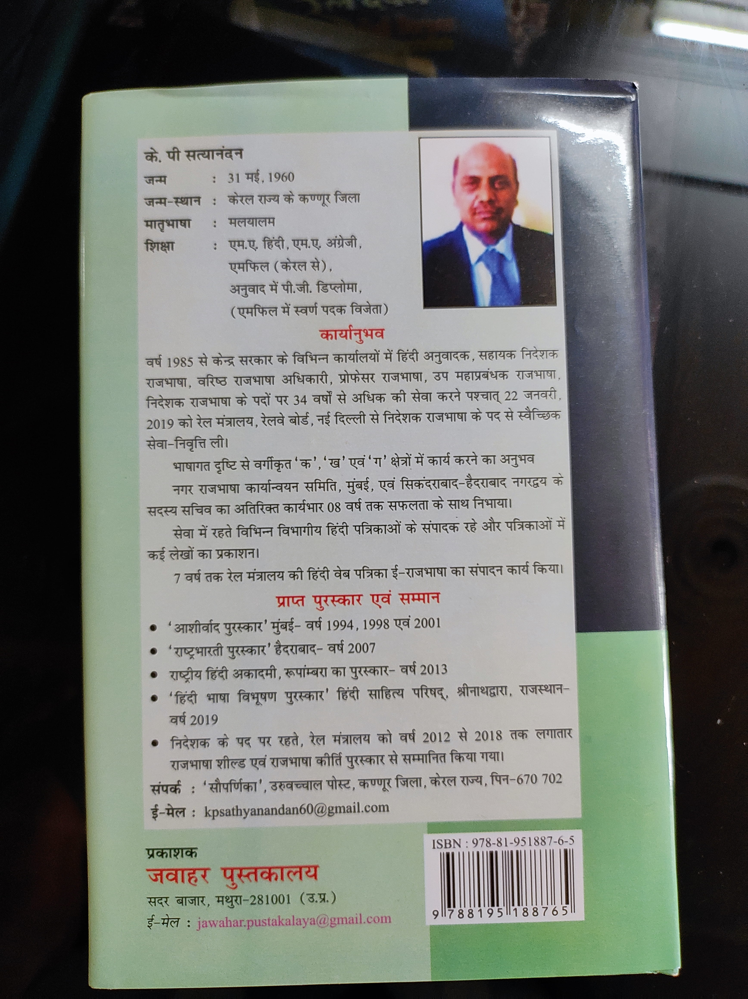

परिचय (About Me)
राजभाषा हिंदी की सेवा में समर्पित एक गौरवमयी यात्रा...
भारतीय रेलवे के रेल मंत्रालय (रेलवे बोर्ड, नई दिल्ली) से सेवानिवृत्त निदेशक (राजभाषा) के रूप में, मैंने राष्ट्रभाषा हिंदी के प्रशासनिक और व्यावहारिक क्रियान्वयन में अपना संपूर्ण जीवन समर्पित किया है। केरल के कण्णूर जिले से आने के कारण, मेरी मातृभाषा मलयालम है, परंतु हिंदी साहित्य के प्रति अगाध प्रेम ने मुझे इस क्षेत्र में विशिष्टता दिलाई।
With over 34 years of dedicated service in the Central Government, I guided the implementation of India's Official Language policy across various railway zones, managing translations, publications, and fostering a collaborative spirit for administrative Hindi.
मेरी पुस्तक (My Publication)
प्रशासनिक सेवा के व्यापक अनुभवों और अनुवाद की बारीकियों को भावी पीढ़ी के साथ साझा करने के उद्देश्य से मैंने राजभाषा प्रशासन व अनुवाद विधा पर आधारित पुस्तक का लेखन किया है। यह पुस्तक सैद्धांतिक और व्यावहारिक दोनों दृष्टिकोणों का सटीक संगम प्रस्तुत करती है।

राजभाषा प्रशासन और अनुवाद विमर्श
यह कृति ३४ से अधिक वर्षों के प्रशासनिक सेवाकाल का सार है, जो नव-प्रशिक्षुओं, अनुवादकों और अधिकारियों के लिए एक अनिवार्य मार्गदर्शिका के रूप में कार्य करती है।
- प्रकाशक (Publisher): जवाहर पुस्तकालय, मथुरा (Jawahar Pustakalay, Mathura)
- ISBN: 978-81-951887-6-5
कार्यानुभव (Service Chronology)
वर्ष 1985 से आरंभ कर, 34 वर्षों से अधिक समय तक केंद्र सरकार के विभिन्न प्रमुख कार्यालयों में प्रशासनिक और अकादमिक योगदान:
- प्रारंभिक सेवाएँ: हिंदी अनुवादक एवं सहायक निदेशक (राजभाषा) के रूप में भाषा सेवा की नींव रखी।
- नेतृत्व पद: वरिष्ठ राजभाषा अधिकारी, प्रोफेसर (राजभाषा), एवं उप महाप्रबंधक (राजभाषा)।
- शिखर योगदान: रेल मंत्रालय, रेलवे बोर्ड (नई दिल्ली) में निदेशक (राजभाषा) के सर्वोच्च पद पर रहते हुए 22 जनवरी, 2019 को स्वैच्छिक सेवा-निवृत्ति ग्रहण की।
- अतिरिक्त उत्तरदायित्व: मुंबई एवं सिकंदराबाद-हैदराबाद नगरों में 'नगर राजभाषा कार्यान्वयन समिति' के सदस्य सचिव के रूप में लगातार 08 वर्षों तक महत्वपूर्ण प्रशासनिक भूमिका का संपादन।
- संपादन कार्य: रेल मंत्रालय की प्रतिष्ठित हिंदी वेब-पत्रिका 'ई-राजभाषा' का लगातार 7 वर्षों तक सफल संपादन।
प्राप्त सम्मान एवं पुरस्कार (Awards)
- राजभाषा कीर्ति पुरस्कार एवं राजभाषा शील्ड: निदेशक पद पर रहते हुए वर्ष 2012 से 2018 तक रेल मंत्रालय को लगातार भारत सरकार द्वारा सम्मानित कराया गया।
- 'हिंदी भाषा विभूषण पुरस्कार' (2019): हिंदी साहित्य परिषद, श्रीनाथद्वारा, राजस्थान द्वारा प्रदान किया गया।
- 'राष्ट्रीय हिंदी अकादमी पुरस्कार' (2013): राष्ट्रीय हिंदी अकादमी (रूपाम्बरा) द्वारा सम्मानित।
- 'राष्ट्रभारती पुरस्कार' (2007): हैदराबाद में उत्कृष्ट साहित्यिक सेवाओं के लिए सम्मानित।
- 'आशीर्वाद पुरस्कार' (मुंबई): वर्ष 1994, 1998 एवं 2001 में तीन बार प्राप्त।
मीडिया प्रस्तुति (Broadcasting)

दूरदर्शन एवं मीडिया प्रसारणों के माध्यम से राजभाषा नीतियों पर चर्चा